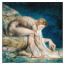

A Companion to Digital Literary Studies
Edited by Ray Siemens and Susan Schriebman
Presented with the permission of
Blackwell Publishing
preparing search...
Loading...
Loading...
 Blackwell Publishing
Blackwell Publishing